![]()
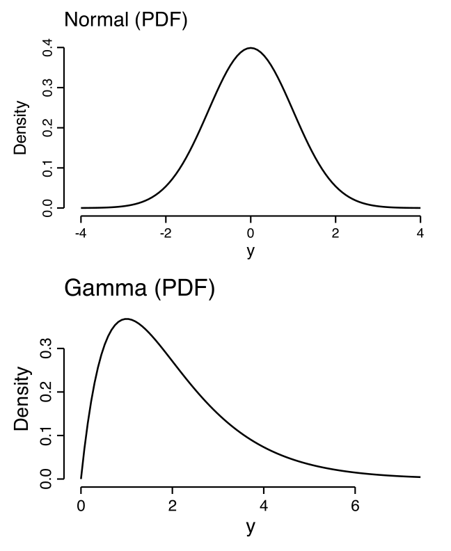
Introduction to Generalized Linear Models for Psychology
Generalized Linear Models Workshop
Last modified: 03-02-2026
Linear Regression
Linear Regression
Estimate the expected (average) outcome given predictors.
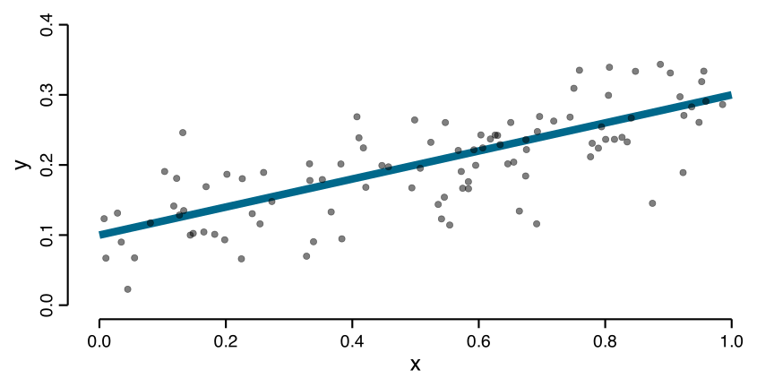The expected value of a random variable with a finite number of outcomes is a weighted average of all possible outcomes.
Linear Regression
A constant change in x leads to a constant change in the expected outcome.
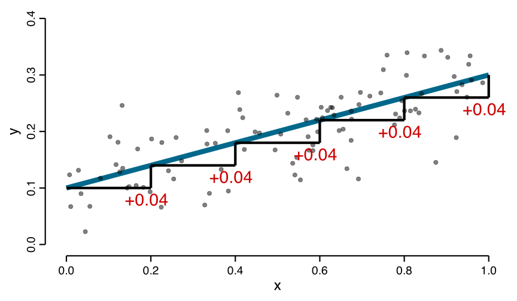Normal linear regression: lm(y~x)
For a fixed \(x_i\), the model describes the distribution of possible outcomes around the expected value.
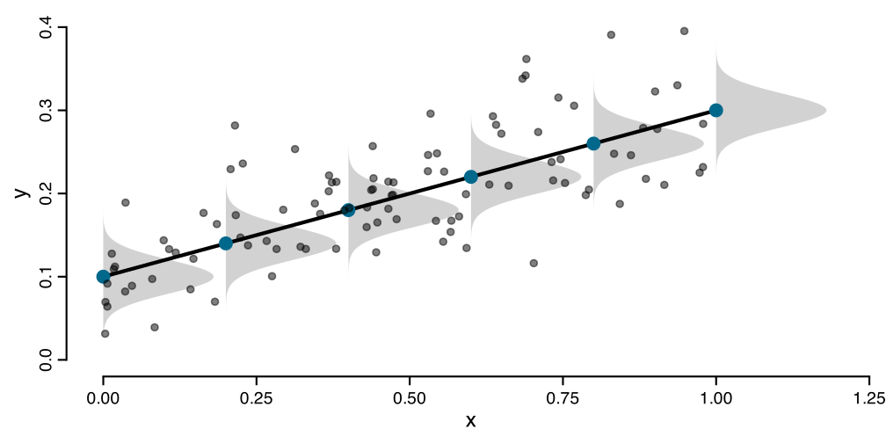Probability Distributions
Why probability distributions?
Our models do not fit our data exactly, we predict the average value of the outcome given the predictors.
Probability distributions help us characterize the variation that remains after predicting the average.
Quantify uncertainty in the estimated parameters of the model!
Probability Distributions
A probability distribution describes all possible values a random variable \(Y\) can take and their associated probabilities, given certain parameters.
\[f(y \mid \boldsymbol{\theta})\]
Where:
- \(y\) is a specific value
- \(\boldsymbol{\theta}\) is a vector of parameters (e.g., \(\mu\), \(\sigma^2\))
- \(f(\cdot)\) is the probability function
Discrete vs. Continuous Variables
Continuous random variables (time, weight, temperature, etc.)
- Probability Density Function (PDF)
- \(f(y \mid \boldsymbol{\theta})\)
- The probability density at \(y\) (not a probability!)
- \(P(Y = y) = 0\) for any specific value
Discrete vs. Continuous Variables
Discrete random variables (counts, binary outcomes, etc.)
- Probability Mass Function (PMF)
- \(P(Y = y \mid \boldsymbol{\theta})\)
- The probability of observing exactly \(y\)
- \(P(Y = 3) = 0.25\) means 25% chance of getting 3
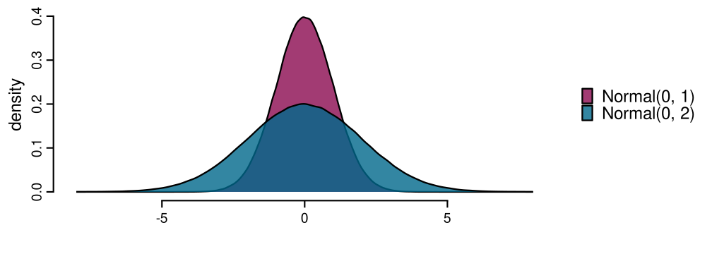
Distributions and linear regression
Predict the average value of \(Y\) and quantify the remaining variation:
Expected value (mean): \(E[Y]=\mu\).
The long-run average of \(Y\) under its distribution.Conditional expected value: \(E[Y\mid X]=\mu(X)\).
The long-run average outcome for a fixed predictor value \(X=x\).Variance: \(\mathrm{Var}(Y)\) (or, in regression, \(\mathrm{Var}(Y\mid X)\)).
How much outcomes vary around the mean (overall or at a given \(x\)).
In normal linear and generalized linear models we generally include predictors on the mean of the distribution.
Why is it important?
The definitions of expected value and variance are universal, but how we compute them (and what they equal) depends on the distribution’s parameters.
For a Normal distribution \(Y \sim \mathcal{N}(\mu,\sigma^2)\), the parameters are exactly the mean and variance.
- Expected value (mean): \(E[Y]=\mu\).
- Variance: \(\mathrm{Var}(Y)=\sigma^2\).
| Distribution | Support | mean: \(E[Y]\) | variance: \(\mathrm{Var}(Y)\) |
|---|---|---|---|
| Normal: \(f(y \text{ | } \mu,\sigma^2)\) | \(y \in \mathbb{R}\) | \(\mu\) | \(\sigma^2\) |
| Gamma: \(f(y \text{ | } \alpha,\lambda)\) | \(y \in (0,\infty)\) | \(\alpha/\lambda\) | \(\alpha/\lambda^2\) |
| Binomial: \(f(y \text{ | } n,p)\) | \(y \in \{0,1,\dots,n\}\) | \(np\) | \(np(1-p)\) |
| Poisson: \(f(y \text{ | } \lambda)\) | \(y \in \{0,1,2,\dots\}\) | \(\lambda\) | \(\lambda\) |
The Normal distribution
Normal distribution
A Normal distribution has parameters \(\mu\) (mean) and \(\sigma^2\) (variance):
\[f(y \mid \mu, \sigma^2) = \frac{1}{\sqrt{2\pi\sigma^2}} \exp\left( - \frac{(y - \mu)^2}{2\sigma^2} \right)\]

Normal distribution
A Normal distribution has parameters \(\mu\) (mean) and \(\sigma^2\) (variance):
\[f(y \mid \mu, \sigma^2) = \frac{1}{\sqrt{2\pi\sigma^2}} \exp\left( - \frac{(y - \mu)^2}{2\sigma^2} \right)\]

Normal distribution
A Normal distribution has parameters \(\mu\) (mean) and \(\sigma^2\) (variance):
\[f(y \mid \mu, \sigma^2) = \frac{1}{\sqrt{2\pi\sigma^2}} \exp\left( - \frac{(y - \mu)^2}{2\sigma^2} \right)\]
Normal linear regression
\(\mu_i = \beta_0 + \beta_1 x_i,\)
\(y_i \sim \mathcal{N}(\mu_i,\sigma^2)\)
\(\quad y_i = \beta_0 + \beta_1 x_i + \varepsilon_i,\)
\(\quad \varepsilon_i \sim \mathcal{N}(0,\sigma^2)\)
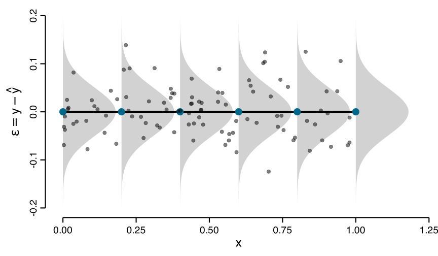
Two equivalent ways of expressing the same modeling assumption.
Normal distribution
- Support: \(-\infty, +\infty\)
- mean = mode = median
- Mean (expected value): \(\mu\)
- Variance: \(\sigma^2\)
- Independence: changing the mean does not change the variance!
Why does it matter?
Real-world measurements are not automatically Normal, Normality is a modeling choice.
- Support: what range of values is possible
- Mean (expected value): what value to predict on average
- Variance: how much variation around the mean
- Mean–variance relationship: does variance change with the mean?
Reaction Times
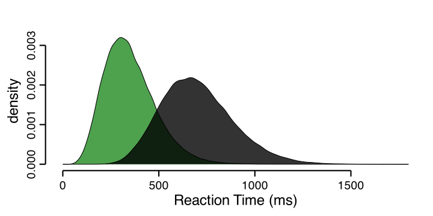Exam pass/fail
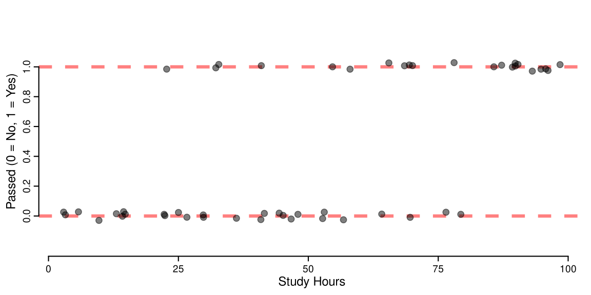Number of errors in a task
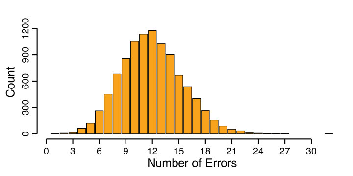Example: Passing the exam
Probability of passing the exam as a function of how many hours students study.
id studyh passed
1 1 29 1
2 2 79 1
3 3 41 1
4 4 88 1
5 5 94 1
6 6 5 0
7 7 53 0
8 8 89 1
9 9 55 1
10 10 46 1
11 11 96 1
12 12 45 1
13 13 68 1
14 14 57 0
15 15 10 0
16 16 90 1
17 17 25 0
18 18 4 1
19 19 33 0
20 20 95 1
21 21 89 1
22 22 69 1
23 23 64 1
24 24 99 1
25 25 66 1
26 26 71 0
27 27 54 1
28 28 59 1
29 29 29 0
30 30 15 0
31 31 96 1
32 32 90 1
33 33 69 1
34 34 80 1
35 35 2 0
36 36 48 1
37 37 76 1
38 38 22 1
39 39 32 0
40 40 23 0
41 41 14 0
42 42 41 1
43 43 41 1
44 44 37 1
45 45 15 1
46 46 14 0
47 47 23 0
48 48 47 1
49 49 27 0
50 50 86 1
51 51 5 0
52 52 44 1
53 53 80 1
54 54 12 0
55 55 56 1
56 56 21 0
57 57 13 0
58 58 75 1
59 59 90 1
60 60 37 1
61 61 67 1
62 62 9 0
63 63 38 1
64 64 27 0
65 65 81 1
66 66 45 1
67 67 81 1
68 68 81 1
69 69 79 1
70 70 44 1
71 71 75 1
72 72 63 1
73 73 71 1
74 74 0 0
75 75 48 1
76 76 22 0
77 77 38 1
78 78 61 1
79 79 35 0
80 80 11 0
81 81 24 1
82 82 67 1
83 83 42 1
84 84 79 1
85 85 10 0
86 86 43 1
87 87 98 1
88 88 89 1
89 89 89 1
90 90 18 1
91 91 13 0
92 92 65 1
93 93 34 0
94 94 66 1
95 95 32 0
96 96 19 0
97 97 78 1
98 98 9 0
99 99 47 1
100 100 51 1# number of students that have passed the exam
sum(dat_exam$passed)
#> [1] 39
# proportion of students that have passed the exam
mean(dat_exam$passed)
#> [1] 0.39
# study hours and passing the exam
tapply(dat_exam$studyh, dat_exam$passed, mean)
#> 0 1
#> 37.52459 69.05128
#>
table(dat_exam$passed, cut(dat_exam$studyh, breaks = 4))
#> (1.9,26.2] (26.2,50.5] (50.5,74.8] (74.8,99.1]
#> 0 23 22 10 6
#> 1 2 6 10 21
#>
tapply(dat_exam$passed, cut(dat_exam$studyh, breaks = 4), mean)
#> (0,24.8] (24.8,49.5] (49.5,74.2] (74.2,99.1]
#> 0.0800000 0.2142857 0.5000000 0.7777778Visualize data
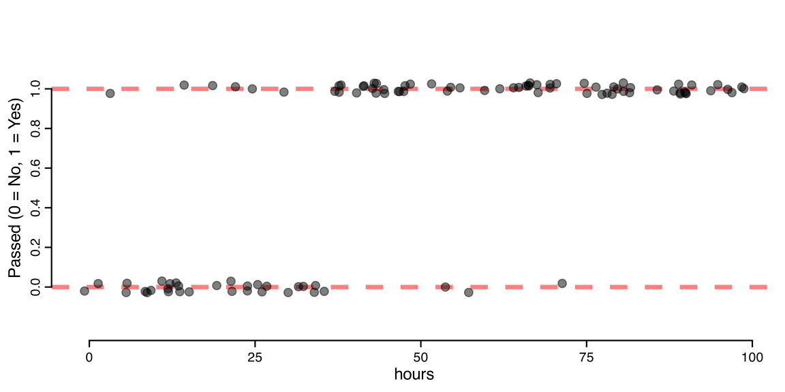Fitting a Normal Linear Model
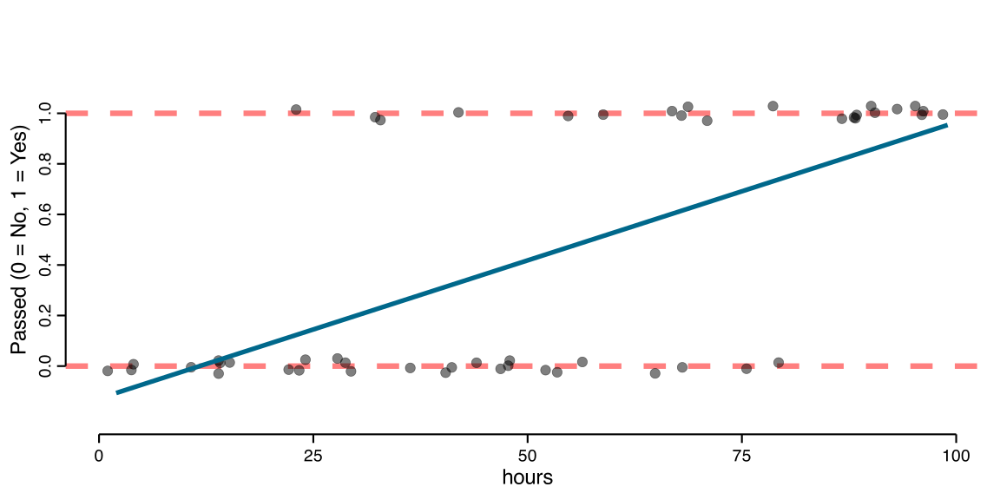How does this look to you?
Fitting a Generalized Linear Model
The model should consider both the support of the \(y\) variable and the non-linear pattern!
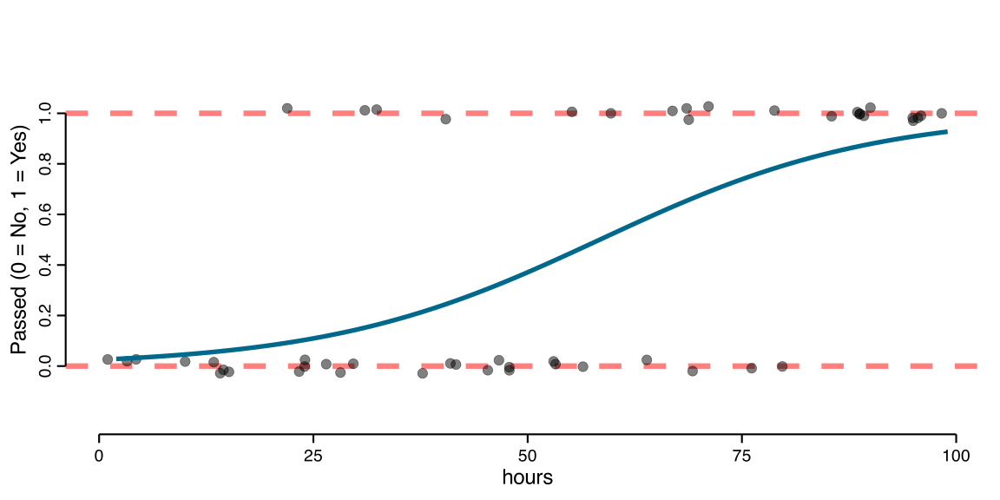Example: Reaction times
Reaction times on two-choice questions as a function of hours studied.
id studyh rt
1 1 29 33.874158
2 2 79 6.640343
3 3 41 34.995848
4 4 88 5.828311
5 5 94 2.431803
6 6 5 24.984741
7 7 53 8.210221
8 8 89 5.506648
9 9 55 16.412949
10 10 46 14.078309
11 11 96 9.175749
12 12 45 8.770755
13 13 68 10.749554
14 14 57 15.919140
15 15 10 54.679986
16 16 90 7.171171
17 17 25 74.819825
18 18 4 49.932109
19 19 33 16.599006
20 20 95 2.888791
21 21 89 6.548021
22 22 69 9.058849
23 23 64 5.355270
24 24 99 2.456604
25 25 66 9.968016
26 26 71 10.180864
27 27 54 11.867775
28 28 59 8.223566
29 29 29 35.066819
30 30 15 72.715225
31 31 96 4.913368
32 32 90 4.123894
33 33 69 9.990744
34 34 80 5.113008
35 35 2 75.652694
36 36 48 12.383083
37 37 76 12.534166
38 38 22 29.525602
39 39 32 51.083314
40 40 23 32.212360
41 41 14 51.492232
42 42 41 42.390660
43 43 41 21.420568
44 44 37 38.708747
45 45 15 34.617161
46 46 14 46.308540
47 47 23 44.218815
48 48 47 22.215179
49 49 27 28.647402
50 50 86 4.076351
51 51 5 76.968889
52 52 44 16.899778
53 53 80 8.228880
54 54 12 57.617081
55 55 56 14.095732
56 56 21 27.639242
57 57 13 73.355891
58 58 75 10.950845
59 59 90 5.841234
60 60 37 27.683213
61 61 67 12.550214
62 62 9 114.145735
63 63 38 30.036094
64 64 27 21.505963
65 65 81 6.573745
66 66 45 11.161376
67 67 81 10.117532
68 68 81 10.373743
69 69 79 12.968275
70 70 44 21.023414
71 71 75 6.249403
72 72 63 17.451597
73 73 71 3.678978
74 74 0 94.914728
75 75 48 16.388884
76 76 22 50.542559
77 77 38 20.268758
78 78 61 10.157155
79 79 35 9.763869
80 80 11 25.284120
81 81 24 47.332562
82 82 67 21.561711
83 83 42 9.911588
84 84 79 1.341846
85 85 10 62.018904
86 86 43 11.517841
87 87 98 3.771747
88 88 89 6.397266
89 89 89 4.149168
90 90 18 29.031131
91 91 13 75.940742
92 92 65 5.803764
93 93 34 71.641900
94 94 66 11.387666
95 95 32 36.461655
96 96 19 31.961301
97 97 78 8.170944
98 98 9 119.428719
99 99 47 9.172191
100 100 51 15.341197Visualize data
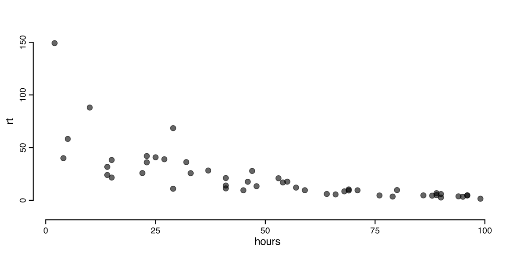Fitting a Normal Linear Model
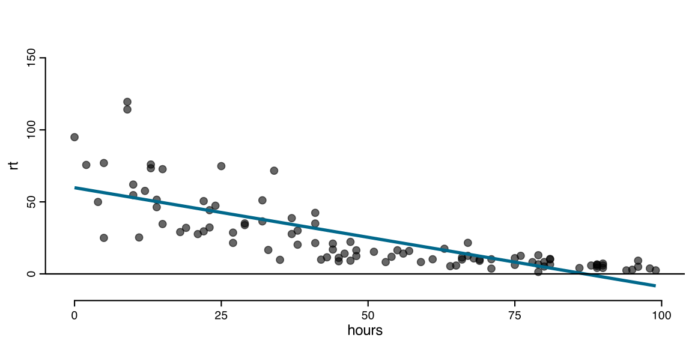How does this look to you?
Fitting a Generalized Linear Model
The model should consider both the support of the \(y\) variable and the non-linear pattern!
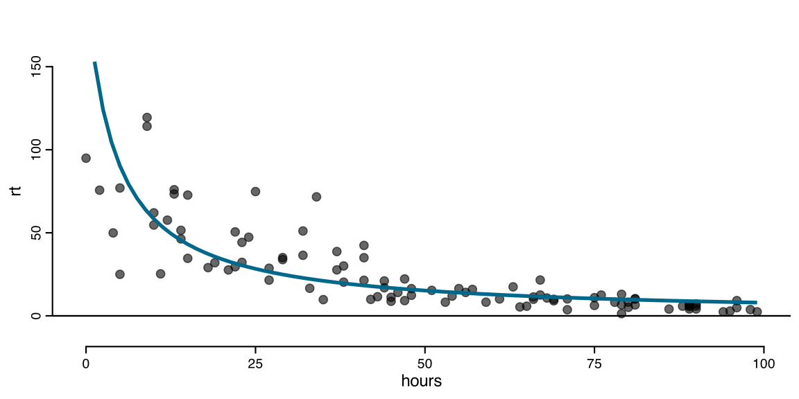Generalized Linear Models (GLM)
General ideas
- using distributions beyond the Normal
- modeling non linear functions on the response scale
- taking into account mean-variance relationships
The three ingredients of a GLM
Random Component: Choose a distribution
Systematic Component: Linear predictor \(\eta_i = \beta_0 + \beta_1 x_i\)
Link Function: Transform the mean \(g(\mu_i) = \eta_i\)
Random component
The random component specifies a probability model for \(y_i\):
\[ y_i \mid x_i \sim \text{Distribution}(\text{parameters}). \]
What support?
- Binary: \(\{0,1\}\) \(\rightarrow\) \(\text{Bernoulli}(p)\) (or \(\text{Binomial}(1,p)\))
- Counts: \(\{0,1,2,\ldots\}\) \(\rightarrow\) \(\text{Poisson}(\lambda)\)
- Any real number: \((-\infty,\infty)\) \(\rightarrow\) \(\text{Normal}(\mu,\sigma^2)\)
Random component
Choosing a distribution specifies not only the mean, but also how the variance depends on the mean (variance function \(V(\mu)\)):
\[ \mu = E(Y \mid X), \qquad \mathrm{Var}(Y \mid X) = \phi \, V(\mu), \]
Once you model \(\mu(x)\), the variance is also determined at each x.
Examples of variance function \(V(\mu)\):
- \(V(\mu) = \mu\) for Poisson,
- \(V(\mu) = \mu(1-\mu)\) for Bernoulli
Systematic Component
The systematic component is exactly the same as in normal linear regression:
\[
\eta_i = \beta_0 + \beta_1 x_{i1} + \beta_2 x_{i2} + \cdots + \beta_k x_{ik}.
\]
Basically it describes how the expected value (i.e., the mean) of the chosen distribution (the random component) varies according to the predictors.
Link Function
The link function \(g(\cdot)\) connects the expected value (mean) \(\mu_i\) of the distribution to the linear predictor \(\eta_i\):
\[ g(\mu_i) = \eta_i \]
Inverse link:
\[ \mu_i = g^{-1}(\eta_i) \]
- The linear predictor \(\eta_i\) can be any real number: \((-\infty, +\infty)\)
- But \(\mu_i\) (the mean) is constrained by the distribution’s support
- The link function transforms \(\mu_i\) to be unbounded
Common link functions
| Distribution | Support of \(y\) | Link | Purpose |
|---|---|---|---|
| Normal | \((-\infty,\infty)\) | Identity: \(g(\mu)=\mu\) | No transformation |
| Binomial | \(\{0,1,\ldots,n\}\) | Logit on \(p\): \(g(p_i)=\log\!\left(\frac{p}{1-p}\right)\), where \(p=\mu/n\) | Probability \(\to \mathbb{R}\) |
| Poisson | \(\{0,1,2,\ldots\}\) | Log: \(g(\mu)=\log(\mu)\) | Positive \(\to \mathbb{R}\) |
| Gamma | \((0,\infty)\) | Log: \(g(\mu)=\log(\mu)\) | Positive \(\to \mathbb{R}\) |
Normal + identity
For example, a Generalized Linear Model with the Normal family and identity link can be written as:
\[ \begin{aligned} y_i &\sim \mathcal{N}(\mu_i, \sigma^2) && \text{Random component} \\ \mu_i &= \eta_i && \text{Link (identity)} \\ \eta_i &= \beta_0 + \beta_1 x_{i1} + \cdots + \beta_k x_{ik} && \text{Systematic component} \end{aligned} \]
Bernoulli + logit
For example, a Generalized Linear Model with the Bernoulli family and logit link can be written as:
\[ \begin{aligned} y_i &\sim \text{Bernoulli}(p_i) && \text{Random component} \\ p_i &= \frac{\exp(\eta_i)}{1+\exp(\eta_i)} && \text{Inverse link (logit)} \\ \eta_i &= \beta_0 + \beta_1 x_{i1} + \cdots + \beta_k x_{ik} && \text{Systematic component} \end{aligned} \]
Bernoulli + logit
For example, a Generalized Linear Model with the Bernoulli family and logit link can be written as:
\[ \begin{aligned} y_i &\sim \text{Bernoulli}(p_i) && \text{Random component} \\ \text{logit}(p_i) &= \log\!\left(\frac{p_i}{1-p_i}\right)=\eta_i && \text{Link (logit)} \\ \eta_i &= \beta_0 + \beta_1 x_{i1} + \cdots + \beta_k x_{ik} && \text{Systematic component} \end{aligned} \]
Binomial Logistic Regression
Random component
The Bernoulli(p) or the Binomial(n,p) distributions can be used as random component when we have a binary dependent variable or the number of successes over the total number of trials.
- Binary (pass/fail), one trial per person; or
- Counts of successes out of \(n\) trials (e.g., items correct out of \(n\)).
Bernoulli Distribution
Suppose you collected data on whether each student passed the exam. Let \(K \in \{0, 1\}\) denote the outcome, where 0 = fail and 1 = pass.
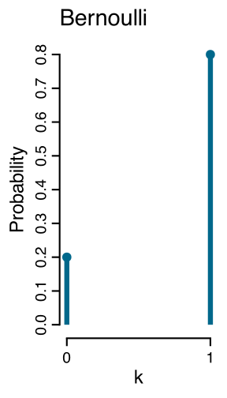
\[ P(K = k) = \begin{cases} p & \text{if } k = 1 \text{ (pass)}, \\ 1-p & \text{if } k = 0 \text{ (fail)}. \end{cases} \]
Equivalently:
\[ P(K = k) = p^k(1-p)^{1-k}, \quad k \in \{0, 1\} \]
- Mean: \(E[K] = p\)
- Variance: \(\text{Var}(K) = p(1-p)\)
Binomial Distribution
Suppose \(n\) students take the same exam and let \(k\) be the number who pass.
\[ P(K = k) \;=\; \binom{n}{k}\, p^{k}\,(1-p)^{n-k}, \quad k = 0, 1, \ldots, n \]
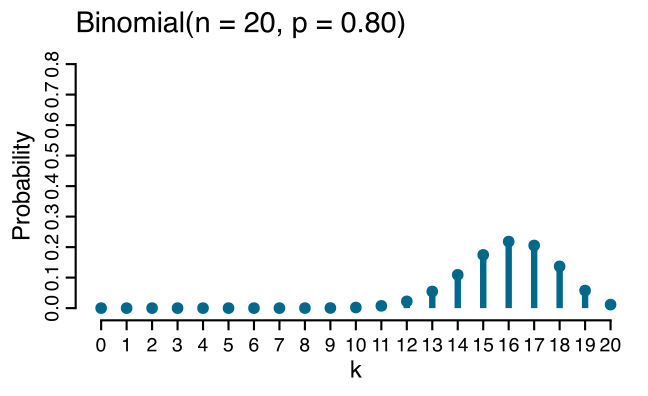
- Mean: \(E[K] = np\)
- Variance: \(\text{Var}(K) = np(1-p)\)
- Sum of \(n\) independent Bernoulli trials
- Bernuolli special case of Binomial when \(n = 1\)
Bernoulli
Binomial
Binomial distribution: \(n = 20\), \(p = 0.5\)
What is the expected number of students passing the exam?
Binomial distribution: \(n = 20\), \(p = 0.9\)
What is the expected number of students passing the exam?
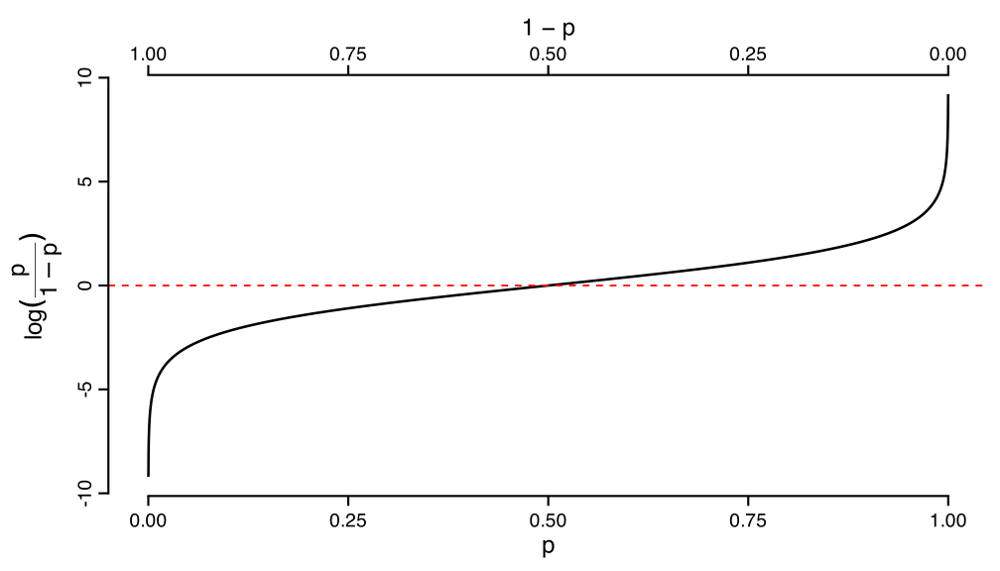
Mean–variance relationship
\[E[Y] = np \quad \text{and} \quad \mathrm{Var}(Y) = np(1-p)\]
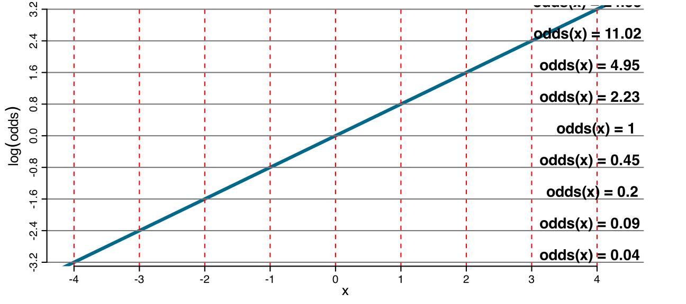Why not model probability directly?
Problem for binary outcomes:
Solution:
Why not model probability directly?
Problem for binary outcomes:
A linear model can predict values outside, but probabilities must stay between 0 and 1.
Solution:
Transform \(p\) using a link function that maps \([0,1]\) to \((-\infty, +\infty)\), then model that with a linear predictor.
Odds, Odds Ratio and Log-Odds
Odds
The odds compare the probability of success to the probability of failure:
\[ \text{odds}(p) = \frac{p}{1-p} \]
Example: If \(p=0.80\) (80% chance of passing), then
\[\text{odds}=\frac{0.80}{0.20}=4\]
This means 4 successes per 1 failure, on average.
Range: Odds go from \(0\) to \(+\infty\), but cannot be negative.
Log-odds (logit)
Taking the logarithm of the odds gives the logit:
\[ \text{logit}(p) = \log\!\left(\frac{p}{1-p}\right) \]
Example: If \(p=0.80\), then \(\text{odds}=4\) and
\[\text{logit}(0.80) = \log(4) \approx 1.39\]
Range: Log-odds span \(-\infty\) to \(+\infty\)
This can be modeled linearly: \(\text{logit}(p_i) = \beta_0 + \beta_1 x_i\)
Odds and Log-odds
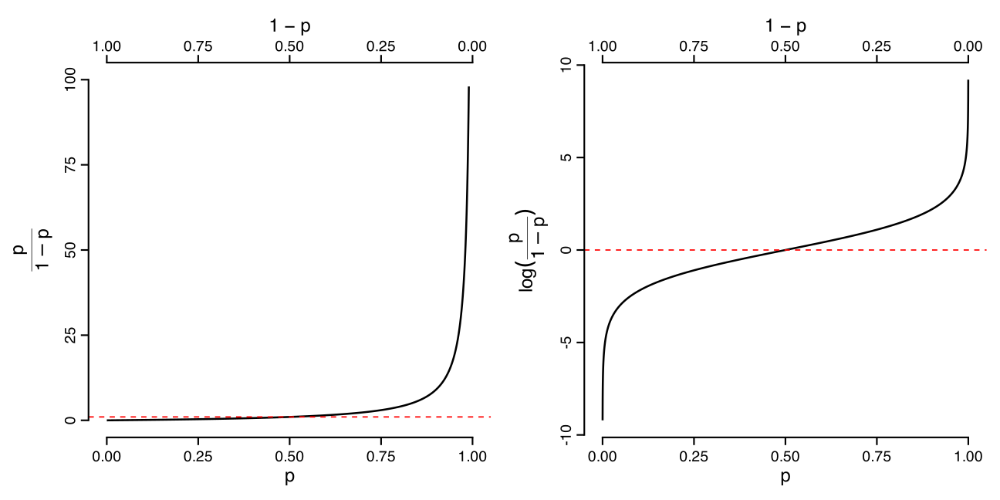Log-Odds: “Equally strong” probabilities on opposite sides of 0.5 become equal in magnitude but opposite in sign.
Example
Let \(y_i \in \{0,1\}\) (Pass), and \(p_i = P(y_i=1 \mid x_i)\) where \(x_i\) = hours studied.
Odds: \(o_i = \dfrac{p_i}{1-p_i}\)
Log-odds (logit): \(\text{logit}(p_i)=\log\!\left(\dfrac{p_i}{1-p_i}\right)\).
Linear predictor: \[
\text{logit}(p_i) = \eta_i,\quad
\eta_i = \beta_0 + \beta_1 x_i .
\]
\(\beta_1\) describes change in log-odds, not probability. What does that mean?
From Log-Odds to Odds
Starting point: \(\log\!\left(\dfrac{p(x)}{1-p(x)}\right) = \beta_0 + \beta_1 x\)
Exponentiating both sides gives the odds:
\[ \text{odds}(x) = \frac{p(x)}{1-p(x)} = \exp(\beta_0 + \beta_1 x) \]
Using properties of exponents: \(\exp(\beta_0 + \beta_1 x) = \exp(\beta_0) \cdot \exp(\beta_1 x)\)
Comparing Two Values of \(x\): The Odds Ratio
When \(x = 0\):
\[ \text{odds}(0) = \exp(\beta_0) \]
When \(x = 1\):
\[ \text{odds}(1) = \exp(\beta_0 + \beta_1) = \exp(\beta_0) \cdot \exp(\beta_1) \]
The ratio:
\[ \frac{\text{odds}(1)}{\text{odds}(0)} = \frac{\exp(\beta_0) \cdot \exp(\beta_1)}{\exp(\beta_0)} = \exp(\beta_1) \]
The Odds Ratio
This ratio is constant regardless of where you start!
For any 1-unit increase (from \(x\) to \(x+1\)):
\[ \frac{\text{odds}(x+1)}{\text{odds}(x)} = \frac{\exp(\beta_0) \cdot \exp(\beta_1(x+1))}{\exp(\beta_0) \cdot \exp(\beta_1 x)} \]
The \(\exp(\beta_0)\) terms cancel:
\[ \frac{\text{odds}(x+1)}{\text{odds}(x)} = \frac{\exp(\beta_1(x+1))}{\exp(\beta_1 x)} = \exp(\beta_1) \]
This constant multiplier is the odds ratio (OR).
\(\rightarrow\) \(\exp(\beta_1)\) tells us how the odds multiply for each 1-unit increase in \(x\).
Concrete Example: One-Unit Change
With \(\beta_1 = 0.8\), for a 1-unit increase (\(x \to x+1\)):
\[ \frac{\text{odds}(x+1)}{\text{odds}(x)} = \exp(\beta_1) = \exp(0.8) \approx 2.23 \]
What this means:
- Studying 1 more hour multiplies your odds of passing by 2.23 (not the probability!)
- This is true whether you go from 2 to 3 hours, 5 to 6 hours, or 10 to 11 hours
Linear on log-odds
Equal changes in \(x\) \(\rightarrow\) equal changes in log-odds
BUT odds multiply by constant factor \(\exp(\beta_1)\)
With \(\beta_0=0, \beta_1=0.8\): each +1 step in \(x\) adds \(0.8\) to log-odds, multiplies odds by \(\exp(0.8) \approx 2.23\)
Generalizing: Any Two Values
For any difference \(\Delta x = x_2 - x_1\):
\[ \frac{\text{odds}(x_2)}{\text{odds}(x_1)} = \frac{\exp(\beta_0 + \beta_1 x_2)}{\exp(\beta_0 + \beta_1 x_1)} = \exp\!\bigl(\beta_1(x_2-x_1)\bigr) \]
Example (\(\beta_1=0.8\)): comparing \(x=6\) to \(x=2\) (\(\Delta x = 4\)):
\[ \frac{\text{odds}(6)}{\text{odds}(2)} = \exp\!\bigl(0.8 \times 4\bigr) = \exp(3.2) \approx 24.5 \]
Studying 4 more hours multiplies odds by 24.5!
What About Probability?
We’ve been working with odds and odds ratios, but what about \(p(x)\)?
From odds back to probability:
\[ p(x) = \frac{\text{odds}(x)}{1 + \text{odds}(x)} = \frac{\exp(\beta_0 + \beta_1 x)}{1 + \exp(\beta_0 + \beta_1 x)} \]
Unlike odds, probability changes are not constant!
- If \(p = 0.1\), adding 1 hour might increase it to \(p = 0.20\) (+0.10)
- If \(p = 0.5\), adding 1 hour might increase it to \(p = 0.69\) (+0.19)
- If \(p = 0.9\), adding 1 hour might increase it to \(p = 0.96\) (+0.06)
Not linear in probability
\(\rightarrow\) Same \(\beta_1\), same OR (2.23×), but different probability changes!
Let’s try
Let’s try
Let’s try
Let’s try
Extra slides
The GLM variance structure
In GLMs, variance is not constant — it changes with the mean: \(\mathrm{Var}(Y\mid X) = \phi V(\mu)\)
The variance function \(V(\mu)\) defines how variance depends on the mean (e.g., \(V(\mu) = \mu\) for Poisson, \(V(\mu) = \mu(1-\mu)\) for binomial)
Once you model \(\mu(x)\), the variance is also determined at each x (up to the scale \(\phi\)).
Heteroscedasticity is implicit in GLMs
What is dispersion?
Dispersion quantifies how spread out the data are around the mean
In the Normal distribution: \(Y \sim N(\mu, \sigma^2)\), the dispersion parameter is \(\phi = \sigma^2\) (the variance)
\(\sigma^2\) controls spread independently of \(\mu\) — you can have any mean with any variance
This separation between location (\(\mu\)) and scale (\(\sigma^2\)) is a defining feature of the Normal family
Dispersion (\(\phi\)) is fixed
Different families handle dispersion differently
Normal: \(\text{Var}(Y) = \sigma^2\) (constant, independent of mean)
Poisson: \(\text{Var}(Y) = \mu\) (variance equals the mean, \(\phi = 1\) fixed)
Binomial: \(\text{Var}(Y) = n\mu(1-\mu)\) (variance is a function of the mean, \(\phi = 1\) fixed)
Fixing \(\phi = 1\) means the entire variance is determined by \(V(\mu)\) — no additional free parameter for “extra variability”.